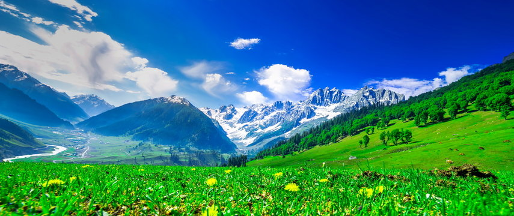

Reasons to visit and explore Kashmir - Paradise on earth
Kashmir is also commonly known as ‘Paradise on Earth’. From the majestic snow-capped mountain ranges to the meandering rivers and the pristine lakes, every square inch of Kashmir is filled with endless charm. Kashmir must be travelled, explored, lived, but most importantly, Kashmir must be felt.
Once you visit Kashmir, the charming beauty of this place will be forever etched in your memory.
A valley between the Great Himalayas and the Pir Panjal mountain range, Kashmir is a land of simplicity and unimaginable beauty.
Mentioned below are the top reasons you should plan your next vacation to Kashmir.
1.Incredible Valleys: The subtle valleys are covered in green for miles at a stretch and seem to overlap the horizon. Beautiful valleys like Markha, Shyok, Nubra, Betaab, Dha Hanu, and many others together make Kashmir heaven on Earth.
2.Serene Lakes: The tranquillity of the crystal clear Dal Lake and Nigeen Lake in Srinagar along with the magical backdrop of the mountains is simply incomparable.
3.Delectable Cuisine: Kashmiri food is an amalgamation of rich flavours and intense colours. A range of dishes is found in this magical valley. The most popular are Yakhni, Kahwa, Rogan Josh and Ghostaba.
4.Cultural and Adventure Hub: Kashmir is not only limited to its beautiful landscapes. You can see the richness of Kashmiri culture in the handiworks of the locals in the form of Kashmiri handlooms, Pashmina and Ferins that are often sold here. It is also the perfect place for taking part in adventurous activities such as a trek through the lakes or skiing in Gulmarg.
5.Amazing things to do in Kashmir: From taking a walk amidst the lush green valleys of Kashmir to boating in Dal Lake, there are a myriad of things that you can possibly do on your trip to Kashmir. Explore the detailed list below.
Things to do in Kashmir
From taking a walk amidst the lush green valleys of Kashmir to boating in Dal Lake, there are a myriad of things that you can possibly do on your trip to Kashmir.
Shikara Ride
The beauty of the mountains as your boatman takes you across the lake is simply unmissable. It is definitely one of the best things that you can do while you are in Kashmir.
- Location: Dal Lake, Srinagar, and Manasbal Lake, Sonamarg
- Timing: 6 am to 5 pm everyday
- Price: INR 150 to INR 250 per person
Gondola Cable Car Ride
May is the most favourable month for a cable car ride. This is one of the most fun and exciting things to do in Kashmir via which you get to see the most stunning views of the snow-capped mountains.
The ride takes place in three phases -
- Gulmarg to Kongdoori
- Kongdoori to Apharwat Peak
- Kongdoori to Mary Shoulder, via chair lift.
- Timing- 10 am to 5 pm (ride) all days of the week. 9 am to 3 pm ( ticket sale)
- Price- INR 600 (phase 1), INR 800 (phase 2), INR 300 (chair lift).
Houseboat Stay
You simply cannot miss spending at least one night in a houseboat amidst nature. It is one of the most offbeat things that Kashmir has to offer.
- Location:Dal Lake in Srinagar
Restaurant Hopping
Trying out the local cuisine is the most fun thing in Kashmir. A few of their rare delicacies include - Nadroo Yakhni, Dum Aloo, Paneer Chaman, Matschgang, and Gushtaba.
Here’s a list of a few famous restaurants:
- The Habit - Cafe & Grill
- Alchi Kitchen
- Stream Restaurant
Old Srinagar Heritage Walk
Srinagar has structures that are over four centuries old and gardens that are nothing but paradise. Walking through this old province is the most peaceful thing that you can do while you stay in Kashmir. From visiting Jama Masjid to walking through the old markets of Srinagar, you will be transported back in history during your stay here.
Indira Gandhi Memorial Tulip Garden
Your visit to Kashmir remains incomplete if you have not visited the famous tulip garden. Named Asia’s largest tulip garden, this place is home to various different species of tulips. The best time to visit Kashmir is from March to May when the Garden is in full bloom.
Paragliding
This is one of the most thrilling experiences that Kashmir has to offer to you. Options for paragliding are available in Gulmarg, Sonamarg, Sanasar, Bhaderwah, and Harwan (most easily accessible).
Skiing
This is one of the most amazing things to do in Kashmir during the winter season when everything is covered in snow. If you are looking to ski and snowboard in Kashmir, then Gulmarg is the best location for you.
Camping
Camping in Kashmir allows tourists to feel the real ambience of this beautiful place. Pahalgam is the ultimate destination for campers, but other remote places like the valleys of Chaptal, Karnah, and Daksum are also popular for camping.
Wildlife Tour
Kashmir has the rarest forms of flora and fauna that are found inside the boundaries of over seven national parks and sanctuaries in the state.
The most famous national parks are:
- Hemis National Park
- Kishtwar National Park
- Salim Ali National Park
- Kazing National Park
- They are home to rare species like snow leopards, musk deer, red fox, golden eagles, Himalayan black bear, and so on. You can also indulge in bird watching in the Gharana and Surinsar regions in Srinagar.
Read more about - 5 best adventure destinations in India for adventure enthusiasts
How to reach Kashmir?
Now that you know what Kashmir has to offer, all you are required to do is book a ticket to this magical paradise.
- By Air: Srinagar airport is the only airport in Kashmir that is well connected to all the major Indian cities. You can avail flight tickets through IndiGo as they have both direct and connecting flights to Kashmir which will make your journey easier.
- By Rail: Jammu Tawi Railway Station that is located at a distance of 330km, is the nearest railway station from Kashmir. You can book private taxis or buses to reach your desired location.
- By Road: Kashmir is well connected to other major cities of India via NH1 and NH44. Buses are operated by state-owned transportation and the bus routes are well connected with cities such as Shimla, Manali, Amritsar, Ludhiana, Panitop, and Delhi.
Tips for travelling to Kashmir
Before travelling to Kashmir, here are a few valuable tips that might help your trip become a great success.
- Always carry warm clothes regardless of the month you are travelling in.
- If you plan on travelling during peak seasons, book your flights and hotels in advance.
- Carry basic medicines and first aid for safety.
- If you are headed to Kashmir during the autumn season, look out for apple-picking activities that might interest you.
- Hire only licensed guides for travelling.
- Avoid carrying a lot of cash.
Kashmir is one of the most famous travel destinations. It is indeed heaven on earth and has to be a part of your bucket list. Make sure that you experience all of the above things and make your stay in Kashmir worthwhile so that when you return home after visiting Kashmir, you bring a part of Kashmir along with you. Thus, in conclusion, as the saying goes in Kashmiri, “Nair khaudaayas havaal!” (have a good journey).
Kashmir weather and climatic conditions
The beauty of Kashmir changes with each season and so you should plan your holiday in Kashmir according to the season that you think would suit you the best.
- Temperatures are not very high during the spring and summer months. The highest is usually not more than 30oC, while the lowest is around 9 to 15o The weather in these months tends to be warm during the days but nighttime can still be quite cold.
- In autumn, the maximum temperature is at least 20oC whereas the minimum is around 9o Mornings can be misty with the warm summer sun, and after sundown, the temperatures can even reach 0oC.
- In winter, there is snow in most of the places and the temperatures often take a dip below 0oC and the highest does not cross 15o
Best time to visit Kashmir
Undoubtedly, Kashmir is one of the most picturesque destinations in India. The best time to visit Kashmir is between March and October, which covers the three seasons - spring, summer and autumn. A visit during these months will surely make your stay a memorable one.
Kashmir experiences spring from the month of March till early May. The summer season usually spans from the month of May to August. You can experience the best weather during these seasons as you get the cool and calm mountain breeze along with the light, warm summer sun.
The autumn months from October to November are not really an ideal tourist time because it gets very chilly, almost like winter. But, Kashmir in autumn is absolutely breathtaking. The spectacular vision of the green chinar tree leaves slowly turning red-golden-yellow is simply unforgettable.
Even though the most ideal season to visit Kashmir is not winter, as the cold during this season acts as a deterrent, people who are fascinated by the idea of a winter wonderland might want to visit Kashmir between November and February because it is the best time to indulge in some winter sports in the sea of white.